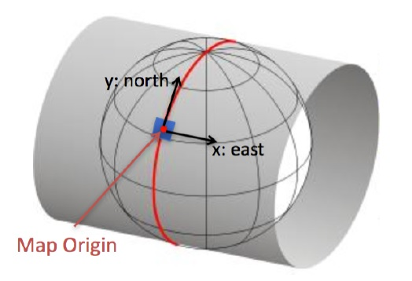
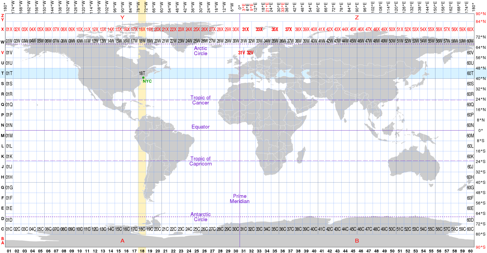

coordination - HD Map
The coordinate system of high -precision map data
1. GNSS Coordinate System
GCJ02 Coordinate System, GCJ02 Coordinate System's coordinates on WGS84, including dimensions, longitudes and altitude (Latitude, Longitude, Altitude).According to national regulations, altitude value is often given 0 or given a relatively high level of the ground.
The GCJ02 coordinate system is the most basic expression of map element coordinates.
2. ENU Coordinate System
The ENU coordinate system can be used for the use of Localization, Fusion, Planning modules.
The definition of ENU coordinate system is:
X -axis -point to the east
Y -axis -point north
Z axis -point to the top (and the gravity line into a straight line)
The ENU coordinate system depends on the 3D Descartes coordinate system established on the surface of the earth.Universal Transversve Mercator UTM uses a 2D Descartes coordinate system to give the surface point of the earth.The coordinate system divides the earth into 60 areas, each region is represented as a 6 -degree longitudinal zone, and it is projected by cutting lines in Makoto in each area.
UTM projection involves the problem of UTM GRID switching. When implementing, please synchronize this problem with other Team.

Regarding the use of UTM coordinate systems, we follow international standards and specifications.You can refer to the following website to get more details:
http://geokov.com/education/utm.aspx
https://en.wikipedia.org/wiki/Universal_Transverse_Mercator_coordinate_system
Apollo CoordInate System: https://github.com/ApolloAuto/apollo/blob/master/docs/specs/coordination_cn.md In Apolo system, UTM Coordinate System is unified in modules such as positioning, Planning and other modules Local coordinate system use 。
UTM:
https://en.wikipedia.org/wiki/File:Universal_Transverse_Mercator_zones.svg
{kind=link}
